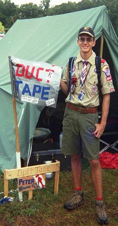

So, umm, thanks for visiting. Can I offer you something to drink? How about a Tab? [rimshot] Get it? It's computer humor. Ha ha. No, seriously, we're not sure exactly how you got here, but so long as you're here, you've got a couple of options. 
So let's get this train wreck a'rollin! History
About two and a half weeks after arriving at college, Peter's parents came down to Blacksburg for his birthday. They had a gift for him: their old digital camera. It had kind of been on the fritz for a couple of months, thus, they had decided to replace it, leaving him with their old yet still fairly nice model camera. About two weeks later, Peter had the occasion to take the camera to a football game. Afterwards, he wanted to share the pictures with his parents (to show them what kinds of things he was doing) but wanted to give a sort of commentary. Now, short of sending them all the pictures and doing some kind of teleconference presentation, Peter eventually decided that the best way to share the experience was with some kind of website. Orignially posted on his Virginia Tech Filebox webspace, the Georgia Tech Game was the very first page created during this, his college experience. Following another trip (the ASCE New River Gorge Bridge trip) it quickly became apparent that the 30 MB of storage space and the limited bandwidth provided by Virginia Tech was going to be inadequate. For this reason, a permanent home for the site was created: PeterPages.net. With its spacious storage capacity and comparatively unlimited bandwidth, our new home has encouraged the creation of not only a large number of additions to the Virginia Tech Experience, as these photo pages came to be known, but also a significant quantity of other random, wandering pages and (hopefully) entertaining snapshots of the randomness life in general. Present Sections
Currently, the most frequently updated page (and most visited) is the Virginia Tech Experience family of pages. The Techaanisqatsi page (see below) is also rather frequently visited, with its various "trailers" to the nonexistent film exist there. And more stuff is coming! Another popular page is the collection of Experimental Films. These are just some random videos that have been put together while here. They all have something peculiar about them. We're working on making a few more of them presentable. Finally, a rather sparsely visited page is the Ombudsman, the comments/complaints page. We're hoping this is a good thing... The FUTURE!
So what can be expected for the future of PeterPages? Nobody really knows for sure. (Translation: even we really don't know and haven't given it much thought.) The possiblities are endless. But we do have a couple of long-term projects under construction. Some of them include: Hot Links: List of Pages | Recent Changes
|